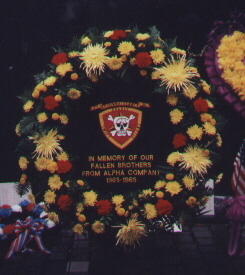

Honor and remembrance
The men killed in action and missing, the awards for valor, and tributes to friends.

Wall of Honor
The men of Alpha Company killed in action, and those missing.
- Wall of HonorEvery man of Alpha Company killed in action. Choose a name for his hometown and his place on the Vietnam Memorial Wall.
- Alpha Company Missing In Action13 menMen declared missing in action, bodies not recovered.
- In Our MemoryThe wreath placed at the Vietnam Memorial Wall on 11 November 1992.

Honors
Medal of Honor, Navy Cross and other citations.

Remembrances
Tributes to friends, in their friends' words.
- Gerald H. Anderson
- John D. Killen, III
- Rick Buesch
- Albert R. Lumpkin
- Frank S. Reasoner
- Richard E. Latimer, Jr. / Carl W. Myllymaki, III
- Carl J. Wilson
- They Walk Among Us
Remembrances Gallery
This page will be utilized for us to remember those that served in Alpha Company
3rd Recon Battalion and are now resting in peace.
If you would like to leave a tribute please contact George Neville